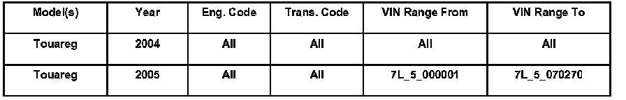
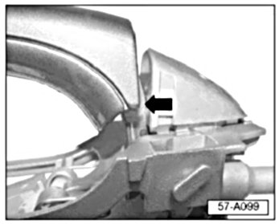
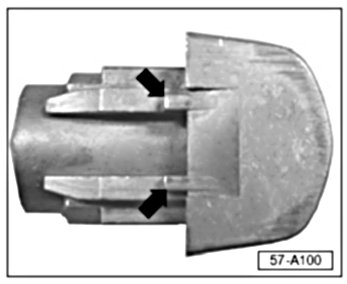
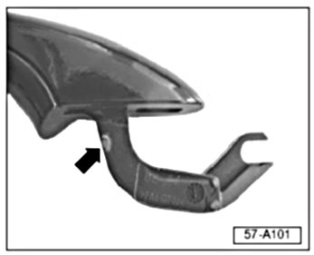
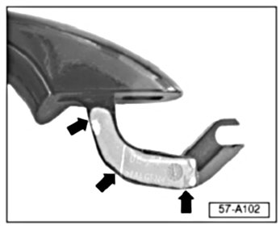
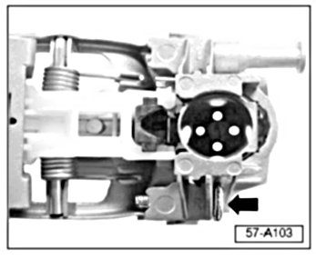
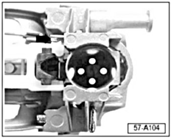
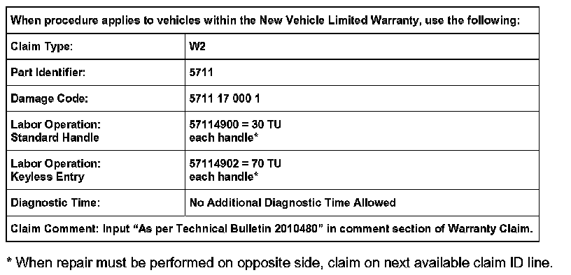

Body - Exterior Door Handle Sticks in Opened position
Condition
57 07 01 Feb. 7, 2007, 2010480, Supersedes Technical Bulletin Group 57 number 05-02 dated Jun. 10, 2005 due to inclusion into ElsaWeb.
Exterior Door Handle, Remains in Open Position
Exterior door handle sticks in the opened position after door is opened.
Technical Background
There are three possible causes identified:
1. Outside door handle rubs on tower.
2. Severe friction between individual components.
3. Plastic bell crank can jamb behind leaf spring.
Production Solution
No production change required.
Service
The following corrective measures are in order of the most likelihood of occurrence.
Tip: Corrective measures for 1 and 2 should always be performed together. Corrective measures for 3 should ONLY be used if 1 and 2 are not effective.
Cause 1:

Outside door handle rubs on tower (arrow) with visible scoring.
Corrective Measure 1:
- Remove and disassemble door handle.

- Grind off approximately 1 mm of material from the tips of the towers (arrows), or enough material to prevent rubbing. DO NOT grind flats.
Tip: DO NOT grind off too much material. Door handle should still lay against towers in the normal position after re-work.
- Lubricate towers lightly with water proof grease.
Cause 2:
Severe friction between individual components.
Corrective Measure 2:
- Remove and disassemble door handle.

- Grind off two small notches (arrow), one each side, on the door handle.

- Apply a thin layer of water proof grease to area indicated.
Cause 3:
Plastic bell crank can jamb behind leaf spring.
Corrective Measure 3:

- Check to make sure that adjusting screw (arrow) is fully screwed in, tighten as necessary.

- Grind a little material off of white bell crank to ensure clearance.
- Assemble door handle, install and ensure correct operation.

Warranty
Required Parts and Tools
No Special Tools required.
No Special Parts required. Always see ETKA for the latest part(s) information.